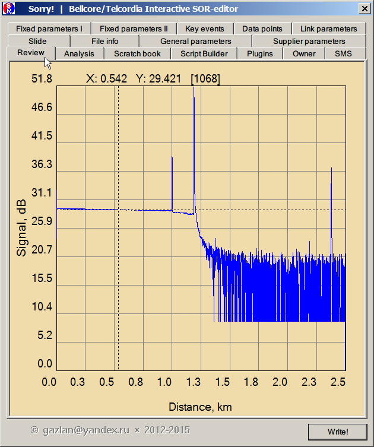
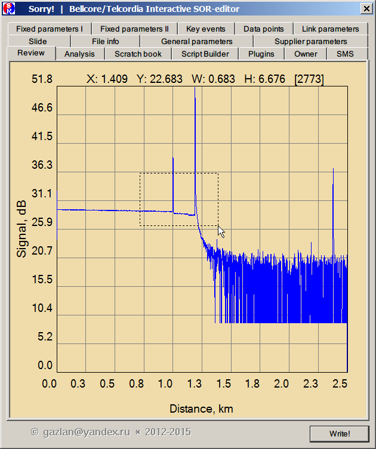
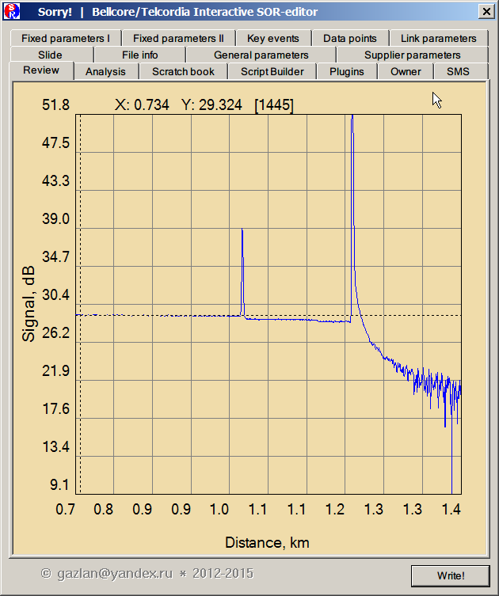
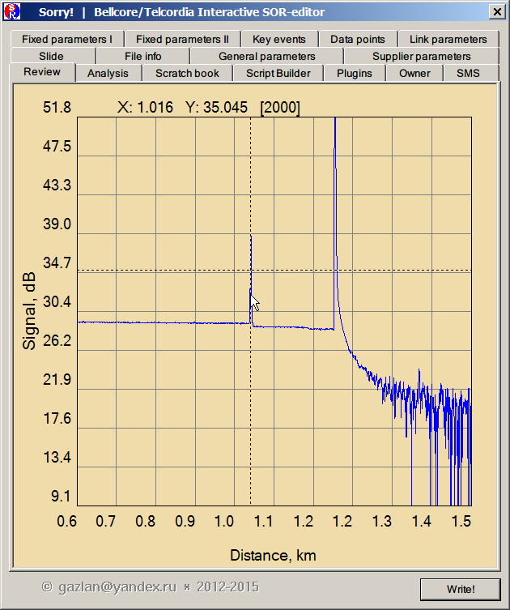
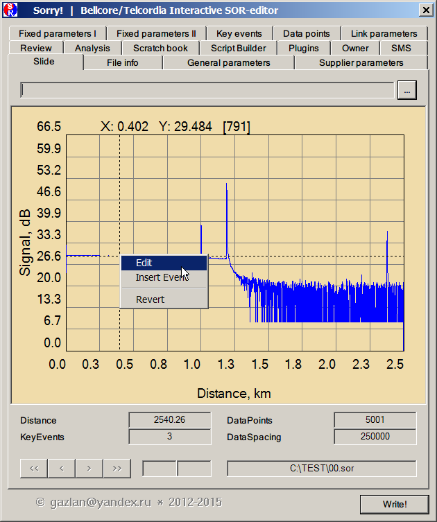
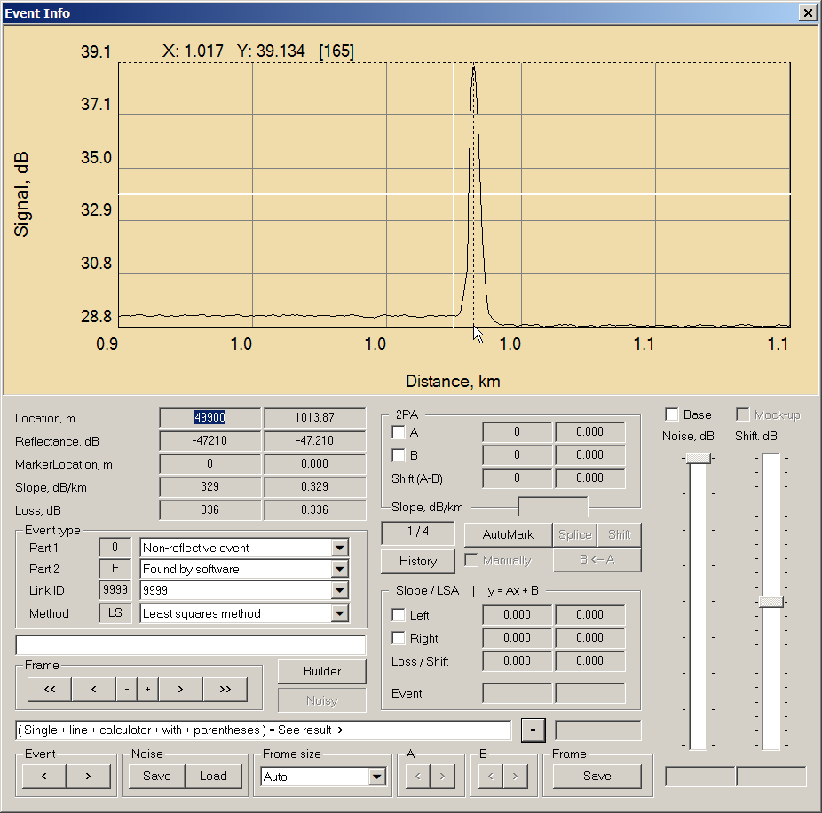

|
„аще всего работа с одиночным файлом начинаетс€ с вкладки Review, предоставл€ющей обзор трассы в целом.

»спользу€ Zoom мышью можно выделить любую интересующую часть трассы. ƒл€ этого необходимо нажать и удержива€ нажатой левую кнопку мыши пот€нуть курсор горизонтально вправо до по€влени€ пунктирной пр€моугольной рамки. ”часток трассы, попавший в рамку, будет увеличен в размере. ќперацию можно повторить несколько раз, до получени€ нужного масштаба. ќбратное движение курсора мыши горизонтально влево приводит к отмене Zoom'a.


ѕри перемещении курсора мыши в пределах пол€ графического редактора, перемещаютс€, вслед за ним, и две штриховых линии, горизонтальна€ и вертикальна€, перекрестие которых прив€зано к текущей точке трассы. ѕри этом горизонтальна€ лини€ отмечает уровень сигнала в dB (Y: 35.045), а вертикальна€ - рассто€ние от начала трассы в km (X : 1.016). роме того, число в квадратных скобках указывает фактический индекс текущей точки трассы в массиве данных [2000]. «нание этого индекса может быть полезно дл€ ручного редактировани€ значени€ в заданной точке (см. Data points)

ѕо правому клику мыши по€вл€етс€ меню, из которого можно перейти в режим редактировани€ / вставки ивента.

¬ режиме вставки, дл€ выбранной точки трассы в таблицу KeyEvents будет автоматически добавлен пустой ивент дл€ данной локации. ¬ любом случае будет открыт диалог Event Info, в котором можно перейти к описанию и редактированию ивента.

|